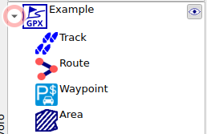
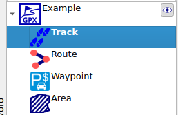
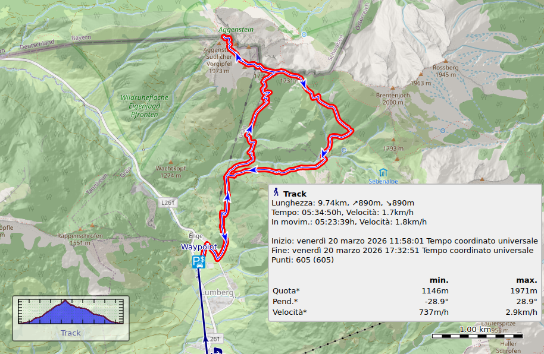
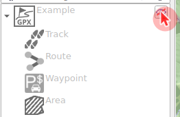

Caricare un file GPX#
Questa pagina mostra come caricare un file GPX in QMapShack, guardarne le tracce e i waypoint e trovarli sulla mappa.
Immagini: © OpenStreetMap contributors; Datenquelle: Land Tirol - data.tirol.gv.at, CC BY 4.0;
Example.gpx: fuzzybear, CC BY-SA 4.0.
Caricare il file#
Un file GPX (GPS Exchange Format) contiene tracce, waypoint e itinerari. Dispositivi GPS, app e siti web di
pianificazione di percorsi lo usano per salvarli e condividerli. Le immagini di questa pagina mostrano Example.gpx,
un’escursione attorno all’Aggenstein.
Fai clic su File → Caricamento dati GIS o premi Ctrl+L.
Seleziona il file GPX e fai clic su Apri. Per caricare più file insieme, tieni premuto Ctrl e fai clic su ogni file.
La finestra di dialogo si apre nella cartella da cui hai caricato o in cui hai salvato l’ultima volta. Se hai
impostato la cartella home, QMapShack apre la
finestra di dialogo nella sottocartella GPX della cartella home, un buon posto per tenere i tuoi file.
Invece di usare il menu, puoi trascinare i file dal tuo file manager sulla mappa.
QMapShack carica anche i suoi file .qms e file di altri dispositivi e programmi: .fit, .tcx, .slf,
.sml, .log e .qlb.
Il progetto nello spazio di lavoro#
QMapShack carica un file come progetto: le tracce, gli itinerari, i waypoint e le aree di un file, tenuti insieme. Il riquadro Spazio di lavoro lo elenca con il nome salvato nel file, o con il nome del file se non ce n’è uno. QMapShack mostra subito sulla mappa tutto il contenuto del progetto. Vedi anche La finestra principale.

Fai clic sulla freccia a sinistra del nome del progetto. Sotto compaiono le sue tracce, i suoi itinerari, waypoint e aree. Tracce, itinerari e aree hanno un’icona che ne indica il tipo, e un waypoint mostra il suo simbolo.
Tieni il puntatore del mouse sul nome di un elemento (una traccia, un itinerario, un waypoint o un’area). Un suggerimento mostra un riepilogo dell’elemento.
Trovare un elemento sulla mappa#

Fai doppio clic su un elemento nel riquadro Spazio di lavoro. La mappa inquadra l’elemento.
Se è una traccia, QMapShack la evidenzia anche sulla mappa. Un box in basso a destra mostra un riepilogo della traccia: lunghezza, salita, tempo, velocità e altro. Un piccolo grafico nell’angolo in basso a sinistra mostra il profilo altimetrico della traccia.

Nascondere un progetto sulla mappa#

Fai clic sul pulsante con l’occhio all’estremità destra della riga del progetto. Tutto il contenuto del progetto scompare dalla mappa, e il progetto e i suoi elementi diventano grigi.
Fai di nuovo clic sul pulsante con l’occhio per mostrare il progetto.
Mentre un progetto è nascosto, un doppio clic su uno dei suoi elementi non cambia lo zoom della mappa.
Conservare lo spazio di lavoro#
QMapShack conserva i progetti del riquadro Spazio di lavoro per il prossimo avvio.
Per farlo, salva una propria copia di ogni progetto e lascia invariato il file che hai caricato. QMapShack scrive le modifiche nel file solo quando salvi il progetto.
QMapShack salva lo spazio di lavoro ogni 5 minuti e quando chiudi il programma. Per cambiare la frequenza:
Fai clic su Spazio di lavoro → Modifica spazio di lavoro.
Nella scheda Generale, imposta i minuti accanto a Salva lo spazio di lavoro all’uscita, ed ogni. Se imposti 0, QMapShack salva lo spazio di lavoro solo quando chiudi il programma.
Fai clic su OK, conferma il messaggio e riavvia QMapShack. La nuova impostazione ha effetto solo dopo il riavvio.
Se togli la spunta dalla casella davanti a Salva lo spazio di lavoro all’uscita, ed ogni, QMapShack smette di salvare lo spazio di lavoro. Al prossimo avvio, lo spazio di lavoro è com’era l’ultima volta che è stato salvato.